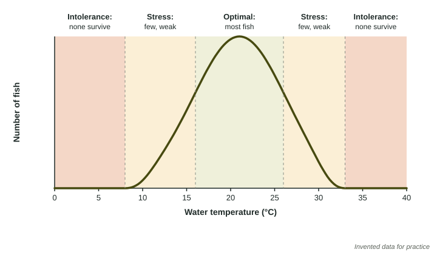

Why do trout live in cold mountain streams but not in warm, muddy rivers? Why do cacti grow in deserts but not in rainforests? Every species can survive only within certain conditions. Ecological tolerance describes those limits, and it explains where species live and what happens when conditions change.
Range of tolerance
For each abiotic factor (temperature, salinity, light, water, nutrients) a species has a range of tolerance: the values it can survive. The range has three parts.

| Part of the range | What individuals do | What the population does |
|---|---|---|
| Optimal range | grow, feed and reproduce best | largest |
| Zone of physiological stress | survive, but grow, feed or reproduce poorly | small |
| Zone of intolerance | die | absent |
The fish in the figure thrive between 16 and 26 °C. Between 8 and 16 °C, and between 26 and 33 °C, they are stressed. Below 8 °C or above 33 °C, none survive.
Surviving is not thriving
In a zone of stress, individuals use energy just to cope. They have less left over for growth and reproduction, so they produce fewer young. A population can shrink in a stress zone even if no adult dies, simply because too few young replace the adults that die of old age.
Worked example. A lab keeps 200 marsh snails at each salinity for 10 days. At 30 parts per thousand (ppt), 45% are alive. How many snails is that?
Setup: . Answer: snails.
At 15 to 20 ppt, 95% survive and over 70% lay eggs. At 30 ppt only 45% survive and 5% lay eggs. So 30 ppt is a stress zone: the snails that survive barely reproduce.
Individuals and populations
Tolerance applies at two levels. Each individual has its own limits, and individuals in a population vary: some tolerate a little more heat or salt than others. The population's range is set by all of them together. When conditions move toward a limit, the least tolerant individuals are hurt first, so the population shrinks before it disappears.
When conditions change
If a place warms, dries or becomes saltier, the species living there respond in one of three ways:
- Stay and struggle: the population enters a stress zone and shrinks.
- Move: populations that can move, such as birds, butterflies or fish, shift to places still inside their range, often uphill or toward the poles as the climate warms.
- Disappear: species that cannot move fast enough, such as corals fixed to a reef, die out in that place.
Populations already near the edge of their range are the most at risk, because a small change pushes them past their limit.
On the exam
- Read a tolerance graph by its zones, and name the zone for a given value.
- Describe effects at both levels: individuals (growth, feeding, reproduction, survival) and population (size, location).
- In an experiment on one factor, keep the other abiotic factors constant so the result can be tied to the factor tested.